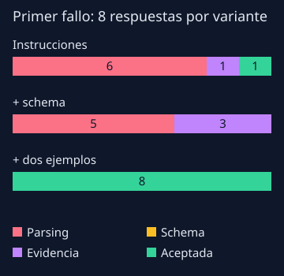
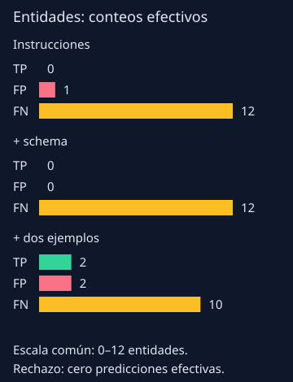

Extracción: formato y aciertos
Replay de una captura local, no inferencia en directo. Datos sintéticos del autor. El navegador no ejecuta Pydantic ni un modelo. Aceptación literal ≠ corrección semántica.
Cargando captura…
Documento y respuesta original
Fuente exacta
Respuesta sin reparar
Mensajes y chat serializado de la petición
Etiquetas esperadas y resultado del validador
Fixtures manuales del validador
Estos casos no son respuestas generadas. La etiqueta semántica la escribió el autor; el control literal no la calcula.
Fuente y respuesta propuesta
Métricas sobre los documentos seleccionados
Elige documentos para recalcular TP/FP/FN con las entidades aceptadas guardadas. Un rechazo aporta cero predicciones. No se repite el validador ni se estima calidad general.
| Variante | TP | FP | FN | Precision | Recall | F1 |
|---|
Gráfica de la selección actual
Las barras cambian al seleccionar documentos. La escala se mantiene en 0–12 para poder comparar selecciones.
Primera etapa: muestra completa

Entidades: muestra completa
